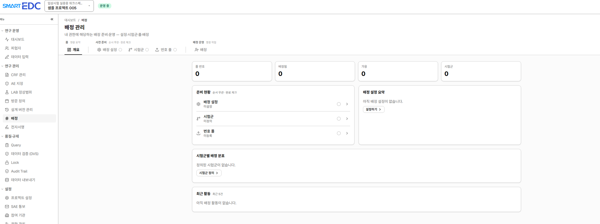
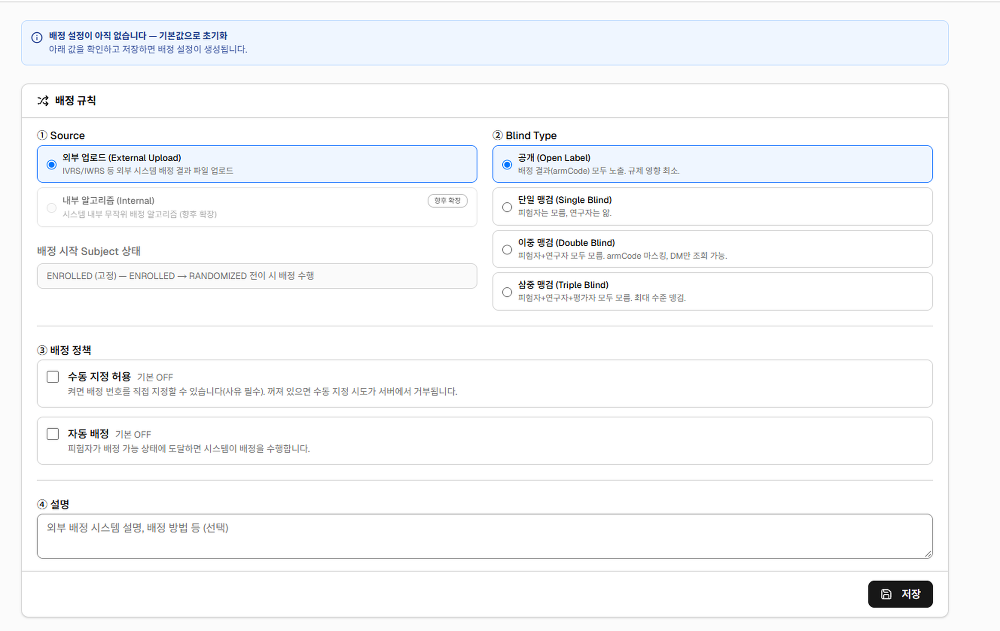
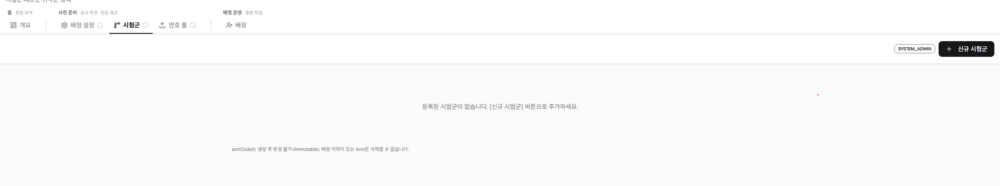
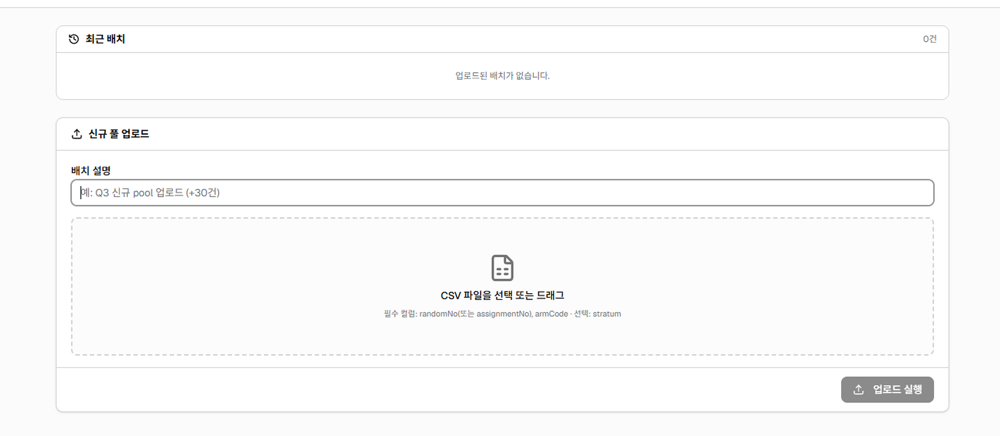
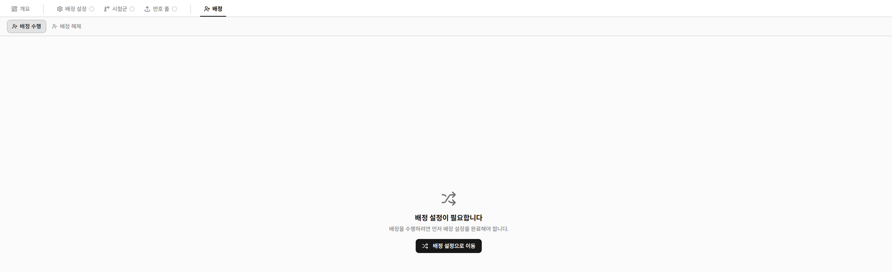
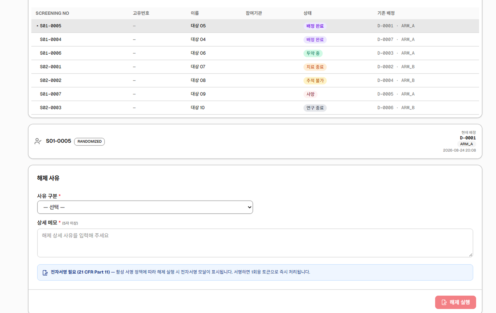

배정
SCR-RAND-007 · 배정 설정 · 시험군 · 번호 풀 · 배정 수행 · 해제
배정 관리 개요
- 1.1화면 구성
- 1.2준비를 마친 뒤
1.1화면 구성
개요
무작위배정을 준비하고 수행하는 화면입니다. 위쪽 가로 탭이 개요 · 배정 설정 · 시험군 · 번호 풀 · 배정 다섯 가지이고, 탭을 고르면 화면 이동 없이 그 자리에서 내용이 바뀝니다. 앞의 세 가지가 사전 준비, 마지막이 배정 운영입니다.
화면 설명

가로 탭 — 다섯 가지를 오갑니다. 담당 권한이 없는 탭에는 자물쇠가 표시되어 선택할 수 없습니다.
설정하기 > — 배정 설정 탭으로 바로 넘어갑니다 2.1.
시험군 정의 > — 시험군 탭으로 넘어갑니다 2.2.
준비 현황의 각 행도 선택하면 해당 탭으로 이동합니다.
왼쪽 메뉴의 연구 관리 > 배정 이 상시 입구입니다. 역할별 대시보드의 배정 위젯에서도 들어올 수 있습니다.
이동 경로는 대시보드 / 배정 입니다.
탭 위의 작은 글씨가 묶음을 알려 줍니다 — 홈 · 사전 준비(순서 무관 · 완료 체크) · 배정 운영(통합 작업).
지표 4종 — 풀 번호 · 배정됨 · 가용 · 시험군 입니다. 준비 전에는 모두 0입니다.
준비 현황 — 세 가지 준비의 완료 여부입니다. 빈 동그라미는 미완료, 초록 체크는 완료입니다. 순서는 무관하므로 편한 것부터 하면 됩니다.
최근 활동 — 배정·해제·업로드 기록이 최근 5건 표시됩니다.
부제의 “내 권한에 해당하는 배정 준비·운영” — 보이는 탭과 버튼이 사람마다 다르다는 뜻입니다.
유의사항
필수 확인 데이터 손상 · 폼 완료 불가
- • 현재 배정 화면은 시스템 관리자만 볼 수 있습니다. 테스트가 끝나지 않아 임시로 닫아 둔 것이며, 배정 권한이 있는 데이터 관리자·연구책임자에게도 왼쪽 메뉴에 배정 항목이 나타나지 않고 주소로 들어가도 차단됩니다. 권한 설정 문제가 아니므로 권한 관리에서 찾지 마시고 시스템 담당자에게 공개 일정을 확인하십시오.
1.2준비를 마친 뒤
개요
준비 세 가지를 마치면 같은 개요 화면이 이렇게 바뀝니다. 지표에 실제 수치가 차고, 설정 요약과 시험군별 분포·최근 활동이 채워집니다. 운영 중에는 이 화면만 봐도 배정이 어디까지 진행됐는지 알 수 있습니다.
화면 설명

탭의 동그라미가 초록 체크로 바뀝니다 — 준비가 끝났다는 표시입니다.
지표 — 풀 번호(업로드한 번호 수) · 배정됨(이미 쓴 수) · 가용(남은 수) · 시험군 수입니다. 가용이 줄어들면 번호를 더 올려야 합니다.
준비 현황 아래 작은 글씨가 설정 완료 · 2개 정의 · 8개 등록 처럼 실제 값으로 바뀝니다.
배정 설정 요약 — 배정 방식·맹검과 상태 가 표시됩니다. 캡처의 “피험자 배정됨 · 방식·맹검 잠금” 은 이미 배정이 시작되어 설정을 바꿀 수 없다는 뜻입니다 2.1.
시험군별 배정 분포 — 배정 수 / 풀 수 와 목표 비율 입니다. 막대는 풀 대비 소진율이며 목표 비율과는 다른 축입니다.
최근 활동 — 피험자 → 시험군 (배정번호) 형식으로, 오른쪽 배지가 배정·수동 지정·해제·업로드를 색으로 구분합니다.
제목과 이동 경로는 준비 전과 같습니다.
유의사항
필수 확인 데이터 손상 · 폼 완료 불가
- • 가용 번호가 0이 되면 배정을 더 할 수 없습니다. 배정 수행 화면에서 “배정 가능 번호가 없습니다” 로 막히므로, 이 지표를 주기적으로 확인하고 미리 번호 풀을 추가로 업로드하십시오 2.3.
사전 준비
- 2.1배정 설정
- 2.2시험군
- 2.3번호 풀
2.1배정 설정
개요
배정의 규칙을 정하는 화면입니다. 네 가지 블록으로 이루어지며, 한 번 저장하고 나면 단계별로 잠깁니다 — 번호 풀을 올리면 맹검이, 피험자가 배정되면 방식까지 잠깁니다. 그래서 맨 처음에 제대로 정해야 하는 화면입니다.
화면 설명

① Source(배정 방식) — 외부 업로드 가 선택되어 있습니다. IVRS/IWRS 등 외부 시스템에서 만든 배정 결과를 파일로 올리는 방식입니다.
② Blind Type(맹검) — 공개 · 단일 맹검 · 이중 맹검 · 삼중 맹검 중에서 선택합니다. 각 항목 아래에 누가 배정 결과를 알 수 있는지가 적혀 있습니다.
수동 지정 허용 — 기본은 꺼짐입니다. 켜면 배정 수행에서 번호를 직접 지정할 수 있게 되며 사유가 필수입니다. 꺼져 있으면 시도 자체가 거부됩니다 3.2.
자동 배정 — 기본은 꺼짐입니다. 켜면 피험자가 배정 가능 상태가 되는 순간 시스템이 배정을 수행합니다.
④ 설명 — 외부 배정 시스템 이름이나 배정 방법을 적어 둡니다. 선택 항목이지만 잠긴 뒤에도 편집할 수 있는 유일한 항목입니다.
저장 — 설정을 만듭니다. 첫 저장으로 배정 설정이 생성됩니다.
“배정 설정이 아직 없습니다 — 기본값으로 초기화” — 값을 확인하고 저장하면 그때 설정이 만들어집니다.
내부 알고리즘 (Internal) 은 향후 확장 으로 선택할 수 없습니다. 현재는 외부 업로드만 지원하므로 번호 풀 업로드가 반드시 필요합니다.
배정 시작 Subject 상태 는 ENROLLED(등록 완료) 고정입니다. 바꿀 수 없으며, 등록 완료 상태의 피험자만 배정 대상이 됩니다.
맹검을 올릴수록 배정 결과를 볼 수 있는 사람이 줄어듭니다. 이중 맹검부터는 시험군 코드가 가려지고 데이터 관리자만 조회할 수 있습니다.
③ 배정 정책 두 가지는 모두 기본이 꺼짐입니다.
유의사항
필수 확인 데이터 손상 · 폼 완료 불가
- • 배정 방식과 맹검은 나중에 바꿀 수 없습니다. 번호 풀을 올리는 순간 맹검이, 첫 피험자가 배정되는 순간 방식까지 잠기며 그때부터는 설명만 고칠 수 있습니다. 각 단계에서 화면 위에 잠금 안내가 표시되므로, 프로토콜의 배정 계획을 확정한 뒤 저장하십시오.
2.2시험군
개요
피험자를 나눌 집단을 정의합니다. 시험군·대조군·위약군 세 가지 유형이 있고, 번호 풀 파일의 armCode 열이 여기에서 정의한 코드와 일치해야 업로드가 성립합니다. 그래서 번호 풀보다 먼저 만들어 두는 편이 안전합니다.
화면 설명

+ 신규 시험군 — 시험군을 추가하는 창을 엽니다. 입력 항목은 코드(armCode) · 이름 · 유형 · 목표 비율 입니다.
탭에서 시험군 이 선택된 상태입니다. 다른 준비로 바로 넘어갈 수 있습니다.
등록 전에는 빈 상태 안내가 표시됩니다. 등록하면 코드 · 이름 · 유형 · 목표 비율 · 배정 수 · 액션 열로 이루어진 표로 바뀝니다.
아래 안내 — “armCode는 생성 후 변경 불가 (Immutable). 배정 이력이 있는 Arm은 삭제할 수 없습니다.”
오른쪽 위 배지는 현재 내 역할입니다. 시험군 편집에는 배정 설정 권한이 필요합니다.
유의사항
필수 확인 데이터 손상 · 폼 완료 불가
- • 시험군 코드는 생성 후 끝까지 변경할 수 없습니다. 번호 풀 파일과 외부 배정 시스템이 같은 코드를 써야 하므로, 프로토콜에 적힌 표기를 그대로 입력하십시오. 배정 이력이 생긴 뒤에는 삭제도 막히고 이름·설명·목표 비율만 고칠 수 있습니다.
2.3번호 풀
개요
외부 배정 시스템이 만든 배정 번호 목록을 CSV 파일로 올립니다. 배정 방식이 외부 업로드 하나뿐이므로 이 단계를 건너뛰면 배정을 수행할 수 없습니다. 한 번에 다 올릴 필요는 없고, 번호가 모자라면 배치를 추가로 올려 이어 붙입니다.
화면 설명

배치 설명 — 이번에 올리는 묶음을 구분할 이름입니다. “예: Q3 신규 pool 업로드 (+30건)” 처럼 무엇을 올렸는지 알 수 있게 적으십시오.
CSV 파일을 선택 또는 드래그 — 파일을 고르면 내용을 미리 검사해 문제가 있는 행을 알려 줍니다.
업로드 실행 — 파일을 고르기 전에는 흐리게 표시됩니다.
최근 배치 — 지금까지 올린 묶음의 목록입니다. 오른쪽 숫자가 건수입니다.
파일 형식 안내 — 필수 컬럼 은 randomNo(또는 assignmentNo)와 armCode 이고, stratum 은 선택입니다. armCode 는 시험군에서 정의한 코드와 같아야 합니다 2.2.
올린 배치가 없으면 빈 상태 안내가 표시됩니다.
유의사항
필수 확인 데이터 손상 · 폼 완료 불가
- • 같은 배정 번호를 두 번 올릴 수 없습니다. 파일 안에서 중복되거나 이미 올린 번호와 겹치면 그 행이 걸러집니다. 추가 업로드를 할 때는 외부 배정 시스템에서 새로 발행한 구간만 내려받아 올리십시오.
배정 운영
- 3.1배정 수행 (준비가 덜 된 경우)
- 3.2대상 선택과 배정 확정
- 3.3배정 해제
3.1배정 수행 (준비가 덜 된 경우)
개요
배정 수행 화면은 준비가 어디까지 됐는지에 따라 다르게 보입니다. 막혀 있을 때 무엇이 모자란지 화면이 직접 알려 주므로, 안내를 읽고 해당 준비 단계로 돌아가면 됩니다.
화면 설명


배정 수행 — 피험자에게 배정 번호를 부여합니다.
배정 해제 — 이미 부여한 번호를 거둡니다 3.3. 두 가지는 같은 탭 안의 전환 단추입니다.
배정 설정이 없으면 배정 설정이 필요합니다 로 막힙니다.
배정 설정으로 이동 — 그 자리에서 설정 탭으로 넘어갑니다 2.1.
설정은 끝났지만 번호 풀이 비어 있으면 자동 제안 자리에 “배정 가능 번호가 없습니다. DM에게 풀 업로드 요청.” 이 표시됩니다 2.3.
그 상태에서는 배정 확정 이 흐리게 표시되어 선택할 수 없습니다.
유의사항
오해하기 쉬운 동작
- • 배정이 막혔을 때 확인할 순서는 개요의 준비 현황 → 비어 있는 항목 → 그 탭 입니다. 세 가지 준비는 순서가 정해져 있지 않지만, 번호 풀은 시험군보다 먼저 올릴 수 없습니다 — 파일의 시험군 코드를 검사하기 때문입니다.
3.2대상 선택과 배정 확정
개요
준비가 모두 끝나면 배정 대상 피험자가 표로 나오고, 한 명을 고르면 시스템이 번호를 제안합니다. 확정하기 전까지는 아무것도 기록되지 않으므로 제안된 번호와 시험군을 확인한 뒤 진행하십시오.
화면 설명


대상 Subject — 배정할 수 있는 피험자 목록입니다. 행을 선택하면 아래가 그 피험자로 바뀝니다.
자동 제안 승인 (기본) — 시스템이 고른 배정번호 → 시험군 이 표시됩니다. 캡처는 D-0007 → ARM_A 입니다.
수동 Override (DM 전용) — 번호를 직접 지정합니다. 배정 오류를 바로잡는 예외 조치이며 사유가 필수입니다. 아래 유의사항을 확인하십시오.
배정 확정 — 선택한 방식으로 배정을 기록합니다. 피험자 상태가 등록 완료 → 배정 완료 로 바뀝니다.
괄호 안 숫자가 배정 가능한 피험자 수입니다. 등록 완료 상태의 피험자만 나옵니다.
“찾는 피험자가 없습니까? 이미 배정된 피험자는 이 목록에 나오지 않습니다 — 배정 해제 후 재배정하십시오.”
선택한 피험자의 코드와 현재 상태가 다시 한 번 표시됩니다. 다른 사람이 아닌지 여기에서 확인하십시오.
확정하면 배정 완료 — 배정번호 · 시험군 · 등록 완료 → 배정 완료 가 초록으로 표시됩니다. 별도 확인 창은 없습니다.
유의사항
필수 확인 데이터 손상 · 폼 완료 불가
- • 수동 지정은 권한과 설정이 모두 갖추어져야 선택할 수 있습니다. 데이터 관리자 권한이 있어도 배정 설정에서 수동 지정 허용 이 꺼져 있으면 비활성이며, 화면이 두 사유를 구분해 알려 줍니다. 무작위성을 해치는 조치이므로 배정 오류 정정 등 예외적인 경우에만 사용하십시오.
3.3배정 해제
개요
이미 부여한 배정 번호를 거둡니다. 배정 오류를 바로잡거나 피험자가 부적격으로 판정된 경우에 사용하며, 해제한 번호는 다시 쓸 수 있는 상태로 돌아갑니다. 감사 추적 대상이라 사유 기록이 까다롭고, 프로젝트 설정에 따라 전자서명이 요구됩니다.
화면 설명

대상 피험자 선택 — 배정된 피험자가 모두 나옵니다. 행을 선택하면 아래가 그 피험자로 바뀝니다.
사유 구분 * — 배정 오류 · 환자 부적격 판정 · Protocol Amendment · 기타 네 가지 중에서 고릅니다.
상세 메모 * — 5자 이상 입력해야 합니다. 감사 추적에 그대로 남습니다.
해제 실행 — 필수 항목이 모두 채워져야 선택할 수 있습니다. 투약 중 피험자는 채울 항목이 더 늘어납니다 (아래 유의사항). 서명이 필요한 설정이면 선택 즉시 전자서명 창이 표시됩니다.
상태 열 — 배정 완료뿐 아니라 투약 중 · 치료 종료 · 추적 불가 · 사망 · 연구 종료인 피험자도 목록에 표시됩니다. 다만 종결 상태 피험자는 선택해도 해제할 수 없습니다 (아래 유의사항).
기존 배정 열 — 배정번호 · 시험군 입니다. 해제 대상을 확인할 때 쓰십시오.
선택한 피험자의 현재 배정(번호 · 시험군 · 배정 일시)이 오른쪽에 다시 표시됩니다.
“전자서명 필요 (21 CFR Part 11)” — 활성 서명 정책이 있는 프로젝트에서만 표시됩니다. 없는 프로젝트에서는 서명 없이 바로 처리됩니다.
유의사항
필수 확인 데이터 손상 · 폼 완료 불가
- • 종결 상태 피험자는 배정을 해제할 수 없습니다. 치료 종료 · 추적 불가 · 사망 · 연구 종료 피험자를 선택하면 “Terminal 상태 피험자는 배정 해제 불가” 경고가 표시되고 해제 실행이 활성화되지 않습니다. 목록에 표시되는 것과 해제할 수 있는 것은 다릅니다.
- • 투약 중 피험자를 해제하려면 다른 책임 연구자(PI)의 승인이 필요합니다. 사유 구분과 상세 메모 외에 PI 승인자 식별자와 해제 뒤 피험자를 어떤 상태로 둘지를 화면에서 함께 지정해야 하며, 조기 종료로 처리하는 경우에는 치료 종료 사유까지 선택합니다. 승인자는 미리 정해 두고 시작하십시오.
오해하기 쉬운 동작
- • 프로젝트 상태에 따라 해제 자체가 차단됩니다. 종료·보관 단계에서는 사유를 입력해도 해제 실행이 활성화되지 않습니다. 해제 기록은 수정·삭제할 수 없습니다.